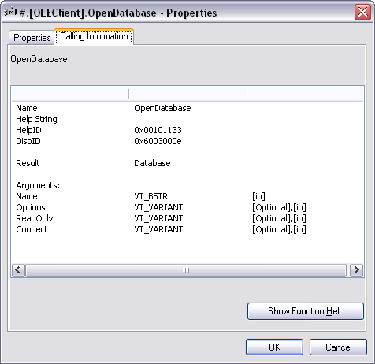
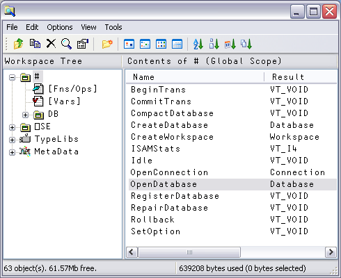
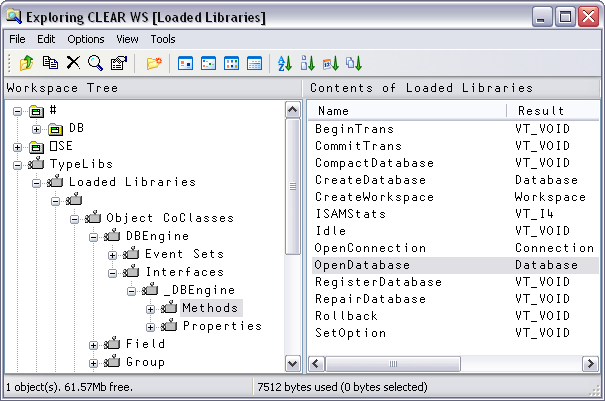

Type Information
In general, it is a requirement that all COM objects provide Type Information. This is commonly provided in a type library file (extension .TLB) or is included in the object's .EXE or .DLL file. Type Information includes the names of the methods, events and properties exported by the object, together with descriptions of the arguments to each method and descriptions of the data types of each property. Type Information is necessary for the COM object to be properly recognised by object browsers and by application development systems.
When you load a COM object, APL by default reads all of the Type Information associated with the top-level object into the workspace. In addition, it reads the Type Information for all other objects in the same object hierarchy, and the Type Information for any other COM objects that are used or referenced by it. This Type Information is retained in the workspace when you )SAVE it. When you reattach an OLEClient or OCXClass to the same object, there is no need for the Type Information to be re-read.
Dyalog APL uses the Type Information to expose the names, data types and arguments of all the methods, events and properties provided by the object, and those of all the other sub-objects in the object hierarchy.
Dyalog APL also uses the Type Information to validate the arguments you supply to methods (both the number and the data types) and the values you assign to properties. For example, if a method is defined to take an argument VT_I4, Dyalog APL will issue a DOMAIN ERROR if you invoke the method with a character argument. Internally, Dyalog APL also uses the Type Information to convert between APL arrays and OLE data types.
The operation to read the Type Information may take several seconds, possibly minutes, and the Type information may occupy a considerable amount of workspace. Nevertheless, the availability of the Type information in the active workspace greatly assists development and optimises run-time performance.
Late Binding
In some circumstances it may be desirable to avoid the process of reading the Type information in its entirety (known as early binding), and instead use a different approach whereby Type information is obtained only when it is needed, that is, when a particular property, method or event is referenced. This is called late binding and is specified by setting the LateBind property of the OLEClient object to 1 when you create it. When this scheme is used, APL only reads the Type information for properties and methods that are actually used, although the benefit of having all the Type information held in the workspace is lost.
Missing Type Information
Not all COM objects provide Type information, or do so in non-standard ways.
In these cases, if LateBind is set to 0, APL will fail to obtain any Type information, the OLEClient object will be created without it and its associated namespace will be empty. If LateBind is set to 1, the alternative mechanism using late binding will probably not work either.
There are however other ways in which the methods, properties and events provided by the COM object may be accessed from APL.
The first approach is to provide APL with the equivalent information using the SetPropertyInfo and SetMethodInfo methods of the OLEClient object. Corresponding mechanisms are provided for defining Events.
The last resort is to rely on a secondary form of late binding in which APL requires only that the COM object confirms the existence of a given name as one that it exports, and then accesses it using a general mechanism. Prior to Dyalog v14.0, this was the only form of late binding provided by Dyalog. For further information, see Using OLE Objects without Type Information.
Identifying Properties, Methods and Events
You can obtain the names of all the properties, methods, and events exposed by a COM object by executing the system function ⎕NL, with the appropriate argument, inside the namespace that is associated with an instance of the object. The result of ⎕NL is a vector of character vectors. If Type Information is unobtainable, the list of items reported by ⎕NL will be empty. See the section entitled OLE Objects without Type Information later in this Chapter.
For example
DB←⎕NEW'OLEClient' (⊂'ClassName' 'DAO.DBEngine.120')
DB.⎕NL ¯2 ⍝ Properties
AutoBrowse ChildList ClassID ClassName Data
DefaultPassword DefaultType DefaultUser
Errors Event EventList Handle HelpFile
IniPath InstanceMode KeepOnClose LastError
Locale LoginTimeout MethodList PropList
Properties QueueEvents SystemDB Type
TypeList Version Workspaces
DB.⎕NL ¯3 ⍝ Methods
BeginTrans CommitTrans CompactDatabase
CreateDatabase CreateWorkspace ISAMStats Idle
OpenConnection OpenDatabase RegisterDatabase
RepairDatabase Rollback SetOptionPre-Version 11 Behaviour
In previous versions of Dyalog, you could obtain this information from the PropList, MethodList, and EventList properties of the object. These 3 properties are internally generated by Dyalog and are not exported by the object itself. You could also obtain this information by executing the system commands )PROPS, )METHODS, and )EVENTS inside the namespace that is associated with an instance of the object.
For backwards compatibility, these capabilities are retained when ⎕WX is 0 or 1.
For example
⎕WX←1
'DB'⎕WC'OLEClient' 'DAO.DBEngine.120'
)CS DB
#.[OLEClient]
)METHODS
BeginTrans CommitTrans CompactDatabase
CreateDatabase CreateWorkspace ISAMStats Idle
OpenConnection OpenDatabase RegisterDatabase
RepairDatabase Rollback SetOption
)PROPS
AutoBrowse ChildList ClassID ClassName
Data DefaultPassword DefaultType DefaultUser
Errors Event EventList Handle HelpFile
IniPath InstanceMode KeepOnClose LastError
Locale LoginTimeout MethodList PropList
Properties QueueEvents SystemDB Type
TypeList Version Workspaces
Using an ActiveX Control
NAME←'Microsoft Office Chart 11.0'
'MOC'⎕WC'OCXClass'NAME
'F' ⎕WC'Form'
'F.MOC' ⎕WC 'MOC' ⍝ Instance of MOC
)CS F.MOC
#.F.MOC
)PROPS
AllowFiltering AllowGrouping AllowLayoutEvents
AllowPointRenderEvents AllowPropertyToolbox AllowRenderEvents
AllowScreenTipEvents AllowUISelection Attach AutoConf
Border Bottom BuildNumber CanUndo ChartLayout ...
Using the Property Sheet
The simplest way to obtain further information about an OLE property, method or event is to display its Property Sheet.
To do this, change space to the namespace that represents the object, type the name (or place the cursor over the name) of the property, method or event in question, press the right mouse button and select Properties from the context menu.
The information displayed for the OpenDatabase method that is provided by the DAO.DBEngine OLE object is shown below.

Using the Workspace Explorer
You can also obtain information using the Workspace Explorer.
If you have created an instance of an object, you can navigate to it using the Explorer and then browse its Events, Methods and Properties. The picture below illustrates the effect of browsing the object DB that is connected to DAO.DBEngine.120.

To obtain detailed information about a specific property, event, or method, just open the appropriate folder and select the name you want. The details will be displayed in the list view pane.
The same information can be obtained by browsing the Loaded Libraries folder. This folder will be displayed if the View/Type Libraries menu item is checked and the appropriate library has been loaded. The library will be loaded if you have ever created an instance of the object in this workspace. Alternatively, you may navigate to the information using the Registered Library folder.

GetPropertyInfo Method
You can also obtain information about the properties exposed by a COM object, using the GetPropertyInfo method. This is a Dyalog APL method, added to the object, and not a native method provided by the object itself.
For example, the DAO.DBEngine OLE object exposes a property called Version. You can discover the meaning of the Version property as follows:
GetPropertyInfo 'Version'
VT_BSTR Or, using ⎕NQ
+2 ⎕NQ '' 'GetPropertyInfo' 'Version'
VT_BSTR This tells you that the property value is a character string (VT_BSTR) that contains the version number of the database engine.
Version
3.51GetMethodInfo Method
You can also obtain information about the methods exposed by an OLE object, using the GetMethodInfo method. This is a Dyalog APL method, added to the object, and not a native method provided by the object itself.
For example, the DAO.DBEngine OLE object exposes a method called OpenDatabase. You can obtain information about the OpenDatabase method as follows:
↑GetMethodInfo 'OpenDatabase'
Database
Name VT_BSTR
[Options] VT_VARIANT
[ReadOnly] VT_VARIANT
[Connect] VT_VARIANT This tells you that the method opens a specified database and that the result is of type Database. Furthermore, the function takes up to four arguments, the first of which (called Name) is a character string (VT_BSTR). The remaining 3 arguments (called Exclusive, ReadOnly and Connect) are optional (their names are surrounded by []) and of type VT_VARIANT.
GetEventInfo Method
Let's use the Windows Media Player as an example. First we must load the Control by creating an OCXClass object using ⎕NEW.
wmp←⎕NEW'OCXClass'(⊂'ClassName' 'Windows Media Player')
'f'⎕WC'Form'
'f.wmp'⎕WC'wmp'Next we can find out what events it supports using ⎕NL ¯8.
wmp.⎕NL ¯8
Buffering Click DblClick Disconnect DisplayModeChange
DVDNotify EndOfStream Error KeyDown KeyPress
KeyUp MarkerHit MouseDown MouseMove MouseUp New
Stream OpenStateChange PlayStateChange PositionCh
ange ReadyStateChange ScriptCommand WarningThen, we can obtain information about a particular event (or events) by invoking a GetEventInfo method. In the case of the Windows Media Control, it is necessary to query the instance of the control (f.wmp) as opposed to the instance of the OCXClass (wmp). For example, you can ask it about its MouseDown event. The result is a vector, each element of which is a 2-element vector of character vectors.
⍴INFO←⊂f.wmp.GetEventInfo'MouseDown'
5The first element contains a description of the event and the data type of its result (few events generate results, so this is usually VT_VOID), that is:
⊃INFO
Sent when a mouse button is pressed VT_VOID Subsequent elements describe the name and data type of each of the parameters to the event. These are the items that will appear as the third and subsequent elements of the event message that is passed as the right argument to a callback function or returned as the result of ⎕DQ. In this case:
↑1↓INFO
Button VT_I2
ShiftState VT_I2
x VT_COORD
y VT_COORDThis information tells us that the first parameter Button is a 2-byte integer value which (presumably) is the number of the mouse button that the user has pressed. The second parameter Shift is also a 2-byte integer and (presumably) reports the keyboard shift state. The third and fourth parameters X and Y are of data type VT_COORD.
Obtaining On-line Help
You can display the help topic associated with a property, method, or event by selecting Help from its context menu or using the help button in its property sheet.
The name of the object's help file is provided by its HelpFile property.
For example, in the case of the DAO.DBEngine OLE object:
⎕WG'HelpFile'C:\PROGRA~1\COMMON~1\MICROS~1\OFFICE12\dao360.chm
For Office 2000 applications, you will need to install the MSDN to obtain the appropriate help files.